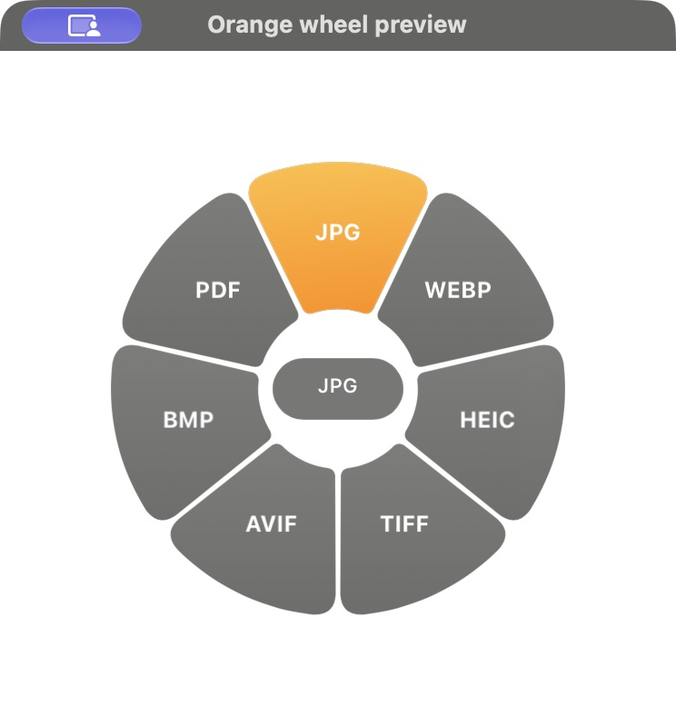
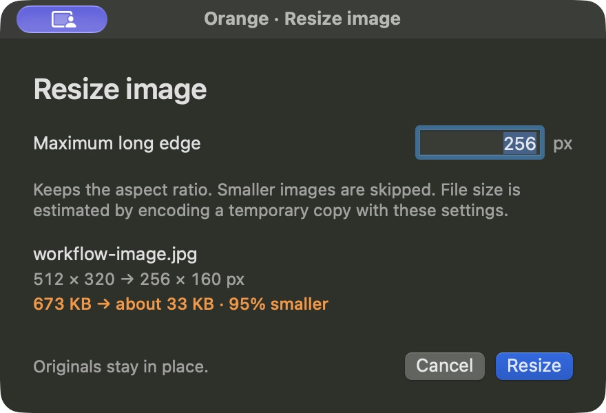
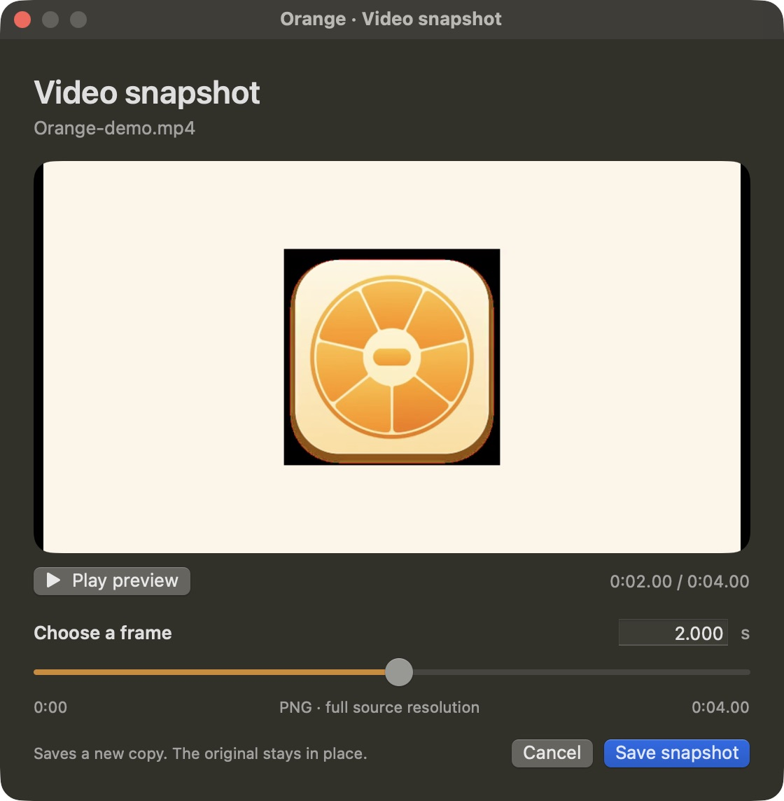

01 / CONVERTA new format.
A new format.
The same easy flow.
Images, video, audio, documents and archives. See the conversions available for your file.
Convert, edit and work with files.
Right where they already are.
Free & open source · Apple silicon · macOS 13+
Interactive illustration · Try an option
A few less windows. A few less clicks.
A useful little wheel, always close by.
Images, video, audio, documents and archives. See the conversions available for your file.
Resize, crop or adjust image quality. Preview estimated file sizes and keep your original.
Scrub to a snapshot, choose a trim range or preview playback speed in a dedicated video panel.
Split by page or custom ranges, merge documents, export pages and preview size reduction.
Native Orange windows, with the choices
and previews right where you need them.



The file stays at the center.
Everything else gets out of the way.
Pick a file in Finder and start dragging. Select several to work on them together.
⇧ Shift to convert. ⌘ Command for tools. ⌃ Control for actions.
Release the file over the wheel. It stays open, so you can pick an option at your own pace.
Choose the tools you use for each file type. Keep shared actions consistent. Set the wheel size, appearance, sound and haptics.
Conversions run on your Mac. No account, file uploads or analytics. Update checks contact GitHub; sharing a file is an action you choose.
Read the code, report an issue or help improve it. Orange and its original artwork are MIT licensed. Bundled tools keep their own licenses.
Explore on GitHubmacOS 13+ · Apple silicon · Free & open source